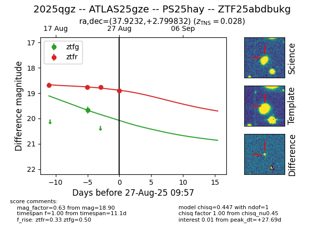

Target 2025qgz at 2025-08-27 09:57, see:
FINK: fink-portal.org/ZTF25abdbukg
Lasair: lasair-ztf.lsst.ac.uk/objects/ZTF25abdbukg
ALeRCE: alerce.online/object/ZTF25abdbukg
TNS: wis-tns.org/object/2025qgz
YSE: ziggy.ucolick.org/yse/transient_detail/2025qgz
alt names
ZTF25abdbukg (ztf,fink)
2025qgz (tns,yse)
ATLAS25gze (atlas)
PS25hay (panstarrs)
coordinates:
equatorial (ra, dec) = (37.9232,+2.79983)
galactic (l, b) = (165.7884,-51.53133)
photometry
last ztfg=19.67, ztfr=18.90
1 ztfg, 4 ztfr detections
